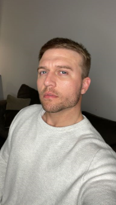

- Personal background: I live in Charlotte, NC. I enjoy all music except country and I enjoy most of my time either with family or being a loner gaming.
- Academic background: High School Diploma.
- Background in this subject: Other than college and building my own PC for gaming, this is my background. Call me a “newbie”.
- Primary Computer Platform: WIN 10
-
Courses I'm Taking & Why:
- WEB115 - Web Markup and Scripting - WHY - I need it to graduate.
- ACA122 - College Transfer Success - WHY - I also need this to graduate.
- CIS115 - Intro to Prog & Logic - WHY - This course is also needed to graduate.
- CTS118 - IS Professional Comm - WHY - This is yet another course needed to graduate.
- WEB140 - Web Development Tools - WHY - This is getting old but yes, this course is another course required to graduate.
- Funny/Interesting item about yourself: Well I’m not funny so I’m not sure if I’m interesting but when I’m asked “What are we?” or “What’s your sign?”, my response is “human”. I find humor in odd ways.
- More on me: I lived in Okinawa, Japan while stationed at Kadena AB for a year and served in the USAF as an inspection specialist for the F-15C model fighter jet. I sometimes dabble in some gaming like World of Warcraft and Valorant. I live a very healthy lifestyle and strive to have a positive mindset that is beneficial for myself and others.